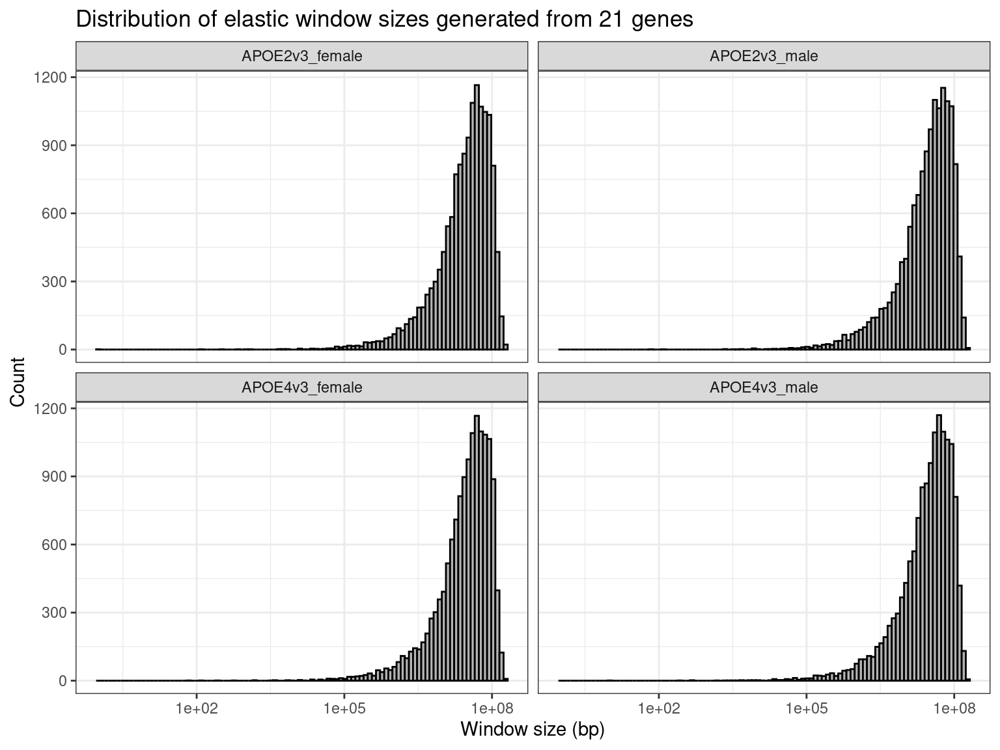
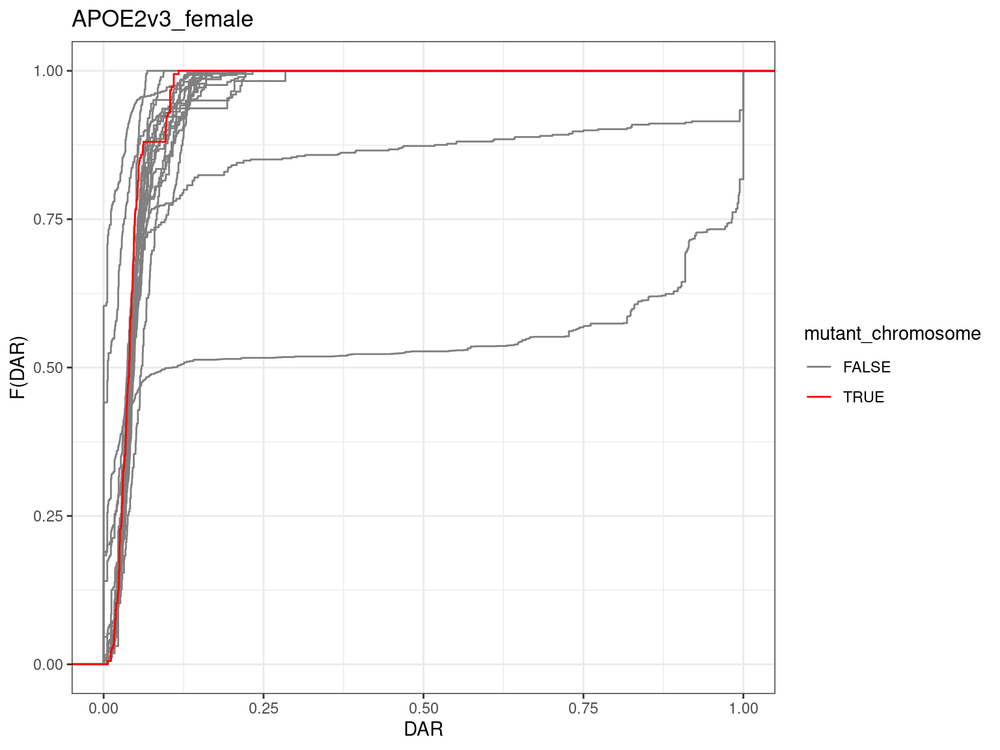
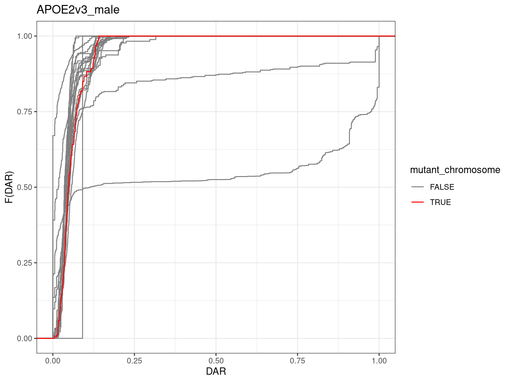
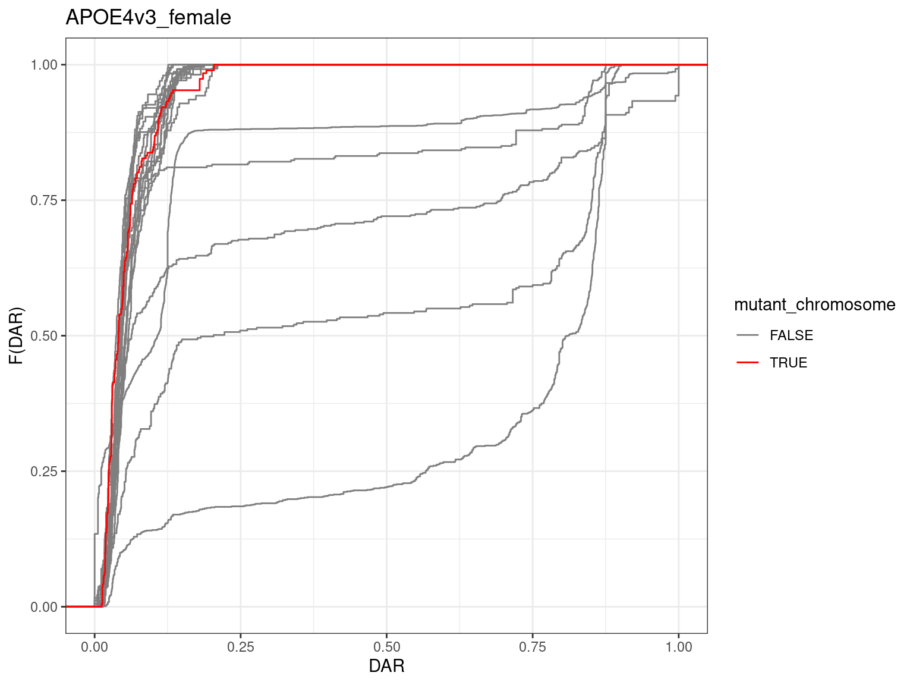
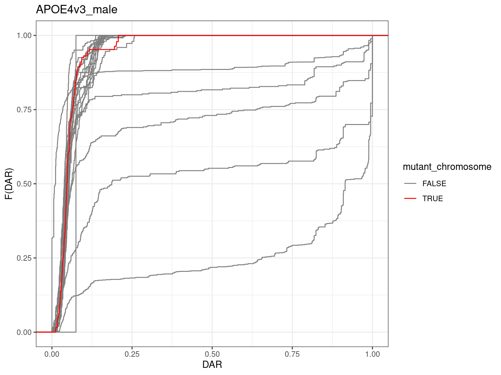
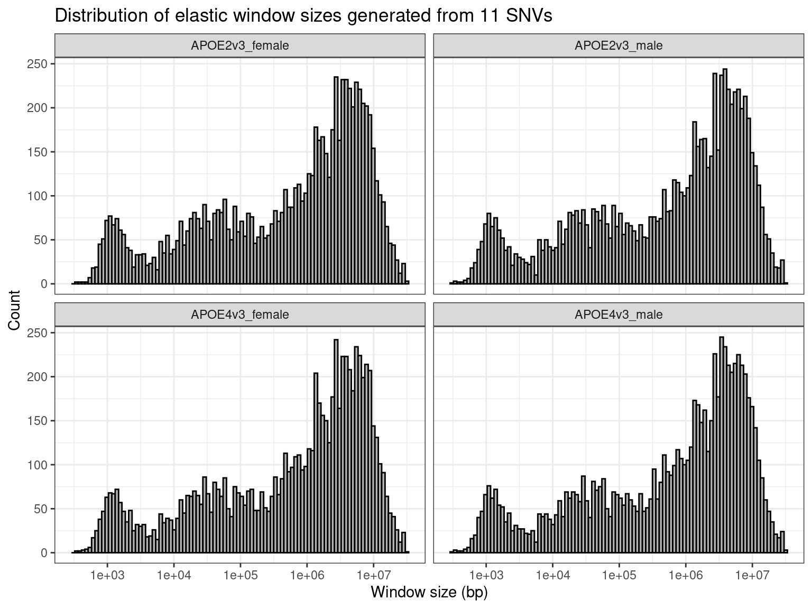

Variants Analysis
211001_APOE_Mm dataset
Lachlan Baer
06 October, 2022
Setup
suppressPackageStartupMessages({
## Common
library(tidyverse)
library(magrittr)
library(future.apply)
library(here)
library(AnnotationHub)
library(purrr)
library(scales)
library(kableExtra)
library(tictoc)
library(ggrepel)
library(RColorBrewer)
library(ggpubr)
library(pander)
library(rmarkdown)
## Project specific
library(VariantAnnotation)
library(Gviz)
library(zoo)
library(msigdbr)
library(viridis)
})if (interactive()) setwd(here::here())
theme_set(theme_bw())
cores <- availableCores() - 1source("~/bioinformatics/bioToolkit/lbFuncs.R")## Choose either local or remote project directory
# projDir <- here()
projDir <- "/hpcfs/users/a1647910/211001_APOE_Mm"options(ucscChromosomeNames = FALSE)EnsDb
ens_species <- "Mus musculus"
ens_release <- "104"
ens_assembly <- "GRCm39"ah <- AnnotationHub() %>%
subset(species == ens_species) %>%
subset(rdataclass == "EnsDb")
ahId <- ah$ah_id[str_detect(ah$title, ens_release)]
ensDb <- ah[[ahId]]chrInfo <- getChromInfoFromEnsembl(ens_assembly, release = ens_release) %>%
dplyr::filter(coord_system == "chromosome")
primary_chrs <- chrInfo$namegenes <- genes(ensDb, filter = SeqNameFilter(primary_chrs))
mcols(genes) <- mcols(genes)[
c("gene_id", "gene_name", "gene_biotype", "entrezid")
]exons <- exonsBy(ensDb, by = "gene", filter = SeqNameFilter(primary_chrs))Metadata
metadata <- read_tsv(here("misc/SYNAPSE_METADATA_MANIFEST.tsv")) %>%
left_join(read_csv(here("misc/metaAPOE.csv"))) %>%
dplyr::select(
sample = specimenID, species, genotypeBackground, litter, dateBirth,
dateDeath, genotype = Genotype, sex = Sex, age = Age, lane, basename = name,
modelSystemName, individualID, study
) %>%
dplyr::filter(str_detect(sample, "_3M_")) %>%
mutate(basename = str_remove(basename, ".bam_R(1|2).fastq.gz")) %>%
distinct(sample, .keep_all = TRUE) %>%
mutate(
group = as.factor(paste0(genotype, "_", age, "_", sex)),
genotype = as.factor(genotype)
) %>%
dplyr::arrange(genotype, group)genoCols <- metadata$genotype %>%
unique() %>%
length() %>%
brewer.pal("Set1") %>%
setNames(unique(metadata$genotype))samples_byGroup <- metadata %>%
split(f = .$group) %>%
sapply(function(x){
pull(x, sample)
}, simplify = FALSE)DE data
dgeList <- readRDS(here("files/dgeList.Rds"))topDE <- readRDS(here("files/topTables_cqn.Rds")) %>%
sapply(function(x){
dplyr::filter(x, chromosome %in% primary_chrs) %>%
droplevels()
}, simplify = FALSE)deGenes <- sapply(topDE, dplyr::filter, DE, simplify = FALSE)Variation between groups
vcf_file <- file.path(
"/hpcfs/users/a1647910/211001_APOE_Mm",
"analysis-variants/results/07_variants/6_select/all_samples.vcf.gz"
)
svp <- ScanVcfParam(info = "", geno = c("GT", "GQ"))
vcf <- suppressWarnings({
readVcf(vcf_file, param = svp)
})gr <- rowRanges(vcf)
mcols(gr) <- NULL
gr <- gr %>%
as.data.frame() %>%
droplevels() %>%
GRanges()unphase_GTs <- function(x){
str_replace(x, "\\|", "\\/")
}
gt <- geno(vcf)$GT %>%
as.data.frame() %>%
mutate(across(everything(), unphase_GTs)) %>%
set_colnames(str_remove(colnames(.), "\\.FCHJKY5BBXX.+"))Fold change
lfc_winSize <- 21
lfc <- lapply(topDE, function(x){
x %>%
dplyr::select(
# Don't include strand because allelic differences between groups is consistent between strands
gene_id, gene_name, logFC, seqnames = chromosome, start, end, width
) %>%
dplyr::filter(seqnames %in% primary_chrs) %>%
mutate(abs.logFC = abs(logFC)) %>%
split(f = .$seqnames) %>%
lapply(function(chr){
mutate(
chr,
lfc_rollmean = rollmean(abs.logFC, k = lfc_winSize, fill = NA),
win_start = lag(start, n = (lfc_winSize - 1) / 2),
win_end = lead(end, n = (lfc_winSize - 1) / 2),
win_size = abs(win_end - win_start)
)
}) %>%
bind_rows() %>%
GRanges()
})Elastic window sizes
lapply(seq_along(lfc), function(ind){
lfc[[ind]] %>%
as_tibble() %>%
dplyr::filter(!is.na(win_size)) %>%
mutate(
comparison = factor(names(lfc[ind]), levels = names(lfc[1:4]))
)
}) %>%
bind_rows() %>%
ggplot(aes(win_size)) +
geom_histogram(
bins = 100,
colour = "black",
fill = "grey70"
) +
scale_x_log10() +
facet_wrap(~comparison, ncol = 2) +
labs(
title = paste0(
"Distribution of elastic window sizes generated from ",
lfc_winSize,
" genes"
),
x = "Window size (bp)",
y = "Count"
)
Allelic diversity
allele_file <- file.path(here(), "files", "allele_stats.Rds")## Takes 15-20 mins to run so .Rds saved for convenience
if (!file.exists(allele_file)) {
gr_tbl <- as_tibble(gr)
allele_counts <- lapply(samples_byGroup, function(samples){
apply(gt[,samples], 1, function(genos){
alleles <- genos %>%
as.character() %>%
str_split("/") %>%
unlist()
tibble(
n_called = sum(alleles != "."),
n_nocall = sum(alleles == "."),
n_0 = sum(alleles == "0"),
n_1 = sum(alleles == "1"),
n_2 = sum(alleles == "2"),
n_3 = sum(alleles == "3")
)
}) %>%
bind_rows()
})
allele_stats <- lapply(allele_counts, function(counts){
cbind(gr_tbl, counts) %>%
mutate(
prop_ref = ifelse(n_called > n_nocall, n_0 / n_called, NA),
prop_called = n_called / (n_called + n_nocall)
) %>%
nest(allele_counts = c(n_called, n_nocall, n_0, n_1, n_2, n_3)) %>%
GRanges()
})
saveRDS(object = allele_stats, file = allele_file)
} else {
allele_stats <- readRDS(allele_file)
}allele_props <- lapply(allele_stats, function(stats){
stats$allele_counts %>%
bind_rows() %>%
mutate(
across(
.cols = c("n_0", "n_1", "n_2", "n_3"),
.fns = ~ ifelse(n_called > n_nocall, .x / n_called, NA)
)
) %>%
dplyr::select(-n_called, -n_nocall)
})dist_winSize <- 11
allele_dist_path <- here("files", "allele_dist.Rds")
if (!file.exists(allele_dist_path)) {
allele_dist <- lapply(
list(
allele_props[c("APOE2_3M_female", "APOE3_3M_female")],
allele_props[c("APOE2_3M_male", "APOE3_3M_male")],
allele_props[c("APOE4_3M_female", "APOE3_3M_female")],
allele_props[c("APOE4_3M_male", "APOE3_3M_male")]
),
function(props){
dist <- vapply(seq(length(gr)), function(ind){
rbind(props[[1]][ind,], props[[2]][ind,]) %>%
dist() %>%
as.numeric()
}, numeric(1))
gr %>%
as_tibble() %>%
mutate(dist = dist) %>%
dplyr::filter(!is.na(dist)) %>%
split(f = .$seqnames) %>%
lapply(function(chr){
dplyr::mutate(
chr,
## Something strange is happening with rollmean()
## Consecutive 0s are being reported as having small negative rollmeans
## Seems like a bug, but rollapply with the partial argument works
# dist_rollmean = rollmean(dist, k = dist_winSize, fill = NA),
dist_rollmean = rollapply(dist, width = dist_winSize, mean, partial = TRUE),
diversity = dist_rollmean / sqrt(2), # sqrt(2) is the maximum dist
win_start = lag(start, n = (dist_winSize - 1) / 2),
win_end = lead(start, n = (dist_winSize - 1) / 2),
win_size = win_end - win_start
) %>%
dplyr::select(-c(dist))
}) %>%
bind_rows() %>%
GRanges()
}
) %>%
set_names(c(
"APOE2v3_female",
"APOE2v3_male",
"APOE4v3_female",
"APOE4v3_male"
))
saveRDS(allele_dist, allele_dist_path)
} else {
allele_dist <- readRDS(allele_dist_path)
}DAR distribution
lapply(seq_along(allele_dist), function(ind){
allele_dist[[ind]] %>%
split(seqnames(.)) %>%
lapply(function(chr){
tibble(
chromosome = as.vector(seqnames(chr)),
div = chr$diversity
)
}) %>%
purrr::reduce(rbind) %>%
mutate(
chromosome = factor(
chromosome,
# Draw mutant chr on top
levels = unique(c(
chromosome[chromosome != "15"],
chromosome[chromosome == "15"]
))
),
mutant_chromosome = chromosome == "15"
) %>%
ggplot(aes(x = div, group = chromosome, colour = mutant_chromosome)) +
stat_ecdf() +
scale_colour_manual(values = c("grey50", "red")) +
labs(
title = names(allele_dist[ind]),
x = "DAR",
y = "F(DAR)"
)
})## [[1]]
##
## [[2]]
##
## [[3]]
##
## [[4]]
Elastic window sizes
lapply(seq_along(allele_dist), function(ind){
allele_dist[[ind]] %>%
as_tibble() %>%
dplyr::filter(!is.na(win_size)) %>%
mutate(
comparison = factor(names(allele_dist[ind]), levels = names(allele_dist))
)
}) %>%
bind_rows() %>%
ggplot(aes(win_size)) +
geom_histogram(
bins = 100,
colour = "black",
fill = "grey70"
) +
scale_x_log10() +
facet_wrap(~comparison, ncol = 2) +
labs(
title = paste0(
"Distribution of elastic window sizes generated from ",
dist_winSize,
" SNVs"
),
x = "Window size (bp)",
y = "Count"
)
dist_winRanges <- lapply(allele_dist, function(x){
x %>%
as_tibble() %>%
dplyr::filter(!is.na(win_size)) %>%
dplyr::select(
seqnames, start = win_start, end = win_end, width = win_size, strand,
dist_rollmean, diversity
) %>%
split(f = .$seqnames) %>%
## Extend the start and ends so that the whole chromosome is covered
lapply(function(chr){
seqname <- unique(chr$seqnames)
chr$start[1] <- 1
chr$width[1] <- chr$end[1] - chr$start[1]
last_ind <- nrow(chr)
chr$end[last_ind] <- chrInfo$length[chrInfo$name == seqname]
chr$width[last_ind] <- chr$end[last_ind] - chr$start[last_ind]
chr
}) %>%
bind_rows() %>%
GRanges()
})dist_winRanges_path <- file.path(here(), "files", "dist_winRanges.Rds")
if (!file.exists(dist_winRanges_path)) {
saveRDS(dist_winRanges, dist_winRanges_path)
}masterGR
## Takes ~5 mins to run so .Rds saved for convenience
## Note a few genes are lost that do not fall within a diversity range
masterGR_path <- here("files/masterGR.Rds")
if (!file.exists(masterGR_path)) {
masterGR <- map2(dist_winRanges, topDE, function(winRanges, tt){
overlaps <- findOverlaps(GRanges(dgeList$genes), winRanges)
lapply(unique(queryHits(overlaps)), function(query){
subjects <- subjectHits(overlaps)[queryHits(overlaps) == query]
diversity <- winRanges$diversity[subjects] %>%
mean()
dgeList$genes[query,] %>%
mutate(diversity = diversity)
}) %>%
bind_rows() %>%
left_join(tt[,c("gene_id", "logFC", "PValue", "FDR", "DE")]) %>%
GRanges()
})
saveRDS(masterGR, masterGR_path)
} else {
masterGR <- readRDS(masterGR_path)
}Visualisation
plot_allele_dist <- function(
chr, genes = GRanges(), mutation = GRanges(),
dist, dist_type = "l", dist_trans = 1, highlight_genes = TRUE,
lfc = NULL, lfc_type = "heatmap", lfc_trans = 1/3,
title
){
tracks <- list()
if (length(mutation)) {
mutation <- mutation %>%
plyranges::filter(seqnames == chr) %>%
plyranges::mutate(symbol = gene_name)
mutant_track <- GeneRegionTrack(
range = mutation,
transcriptAnnotation = "symbol",
col = "white",
fill = "white",
showTranscriptId = TRUE,
fontcolor.group = "red",
cex.group = 0.6,
size = 0.3
)
tracks <- append(tracks, mutant_track)
}
axis_track <- GenomeAxisTrack(
add53 = TRUE,
add35 = TRUE,
name = paste0("Chr", chr),
showTitle = TRUE
)
if (length(mutation)) {
axis_track <- HighlightTrack(
trackList = list(axis_track),
range = mutation
)
}
tracks <- append(tracks, axis_track)
if (length(genes)) {
genes <- genes %>%
plyranges::filter(seqnames == chr) %>%
plyranges::mutate(symbol = gene_name)
gene_track <- GeneRegionTrack(
range = genes,
name = "DE",
transcriptAnnotation = "symbol",
showTranscriptId = TRUE,
fontcolor.group = 1,
cex.group = 0.5,
size = 0.3
)
tracks <- append(tracks, gene_track)
}
dist_track <- dist[,"diversity"] %>%
plyranges::filter(seqnames == chr) %>%
DataTrack(
type = dist_type,
name = "Between-group genetic dissimilarity",
window = -1,
windowSize = 1,
col = "grey30",
col.axis = "black",
yTicksAt = seq(0, 1, 0.1),
ylim = c(0, 1),
transformation = function(x){x^(dist_trans)}
)
if (highlight_genes) {
if (all(length(genes) & length(mutation))) {
ranges <- c(genes, mutation)
} else if (length(genes)) {
ranges <- genes
} else if (length(mutation)) {
ranges <- mutation
}
dist_track <- HighlightTrack(
trackList = list(dist_track),
range = c(genes, mutation),
col = c(rep("#ffd1d1", length(genes)), rep("red", length(mutation))),
fill = c(rep("#ffd1d1", length(genes)), rep("red", length(mutation)))
)
}
tracks <- append(tracks, dist_track)
if (length(lfc)) {
lfc_track <- lfc[,"lfc_rollmean"] %>%
plyranges::filter(seqnames == chr) %>%
DataTrack(
type = lfc_type,
name = paste0("abs.logFC^(1/3)"),
size = 1.5,
window = -1,
windowSize = 1,
col.axis = "black",
showColorBar = TRUE,
gradient = viridis(100, option = "D"),
transformation = function(x){x^(lfc_trans)}
)
tracks <- append(tracks, lfc_track)
}
plotTracks(
trackList = tracks,
main = title,
cex.main = 1,
col.title = "black",
background.title = "white"
)
}chr <- "7"
ind <- 1
plot_allele_dist(
chr = chr,
genes = genes[deGenes[[ind]]$gene_id],
mutation = genes[genes$gene_name == "Apoe"],
dist = allele_dist[[ind]], dist_type = "l", dist_trans = 1,
lfc = lfc[[ind]], lfc_type = "heatmap", lfc_trans = 1/3,
# title = paste0(
# names(allele_dist[ind]),
# " - dissimilarity win of ", dist_winSize, " SNVs",
# " - logFC win of ", lfc_winSize, " genes"
# )
title = ""
)
Try quasi likelihood for DE testing Look at regulatory TFT datasets throw away gene sets with no DE genes check previours chromosomal enrichment analysis
Circos plot